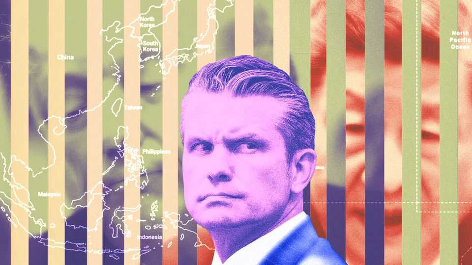

America’s secretary of war pulls his punches on China
The Pentagon’s strategy for Asia contains a very big hole
June 4th 2026

FOR MORE than 20 years America’s secretaries of defence have trekked to the Shangri-La Dialogue—a gathering of defence officials and analysts held annually at a hotel in Singapore—to give speeches that lay out their Asia strategy. When Pete Hegseth, the man currently in that job, spoke at the event last year he was a mere four months into his tenure. Much of the Trump administration’s thinking was at the time still being forged. So on May 30th brass from dozens of countries crowded once again into a ballroom just north of the equator in the hope of understanding, as well as possible, how America’s approach to Asia is developing. They left with only greater doubts about that country’s commitments to its Asian allies, and in particular to Taiwan.
America’s strategy, Mr Hegseth made clear, is one of geographic and diplomatic retrenchment. Under the Biden administration the Pentagon sought to build coalitions across all of what it called the Indo-Pacific, a vast area stretching from South Asia to California. By contrast, the Trump administration’s focus is on the “first island chain”, an archipelago that runs from Japan down to the Philippines. Holding that geographic area, American defence wonks believe, is the key to securing what Mr Hegseth called “a favourable balance of power” in Asia.
The second part of the Pentagon’s strategy is a narrower focus on “hard” power, or military force. That again contrasts with the Biden administration, which emphasised the importance of a “rules-based” international order and sought signals of support even from countries that lack much military heft. “You can have all the rules you want, and rules are great, but if you can’t back them up with hard power, the rules are not worth the paper they are written on,” Mr Hegseth told the crowd. To that end, he called on America’s Asian allies to assume more of the burden of their own defence by spending at least 3.5% of GDP on their own armed forces (most of them are nowhere near this).
The centrepiece of the Biden administration’s strategy was a bloc made up of America, Australia, India and Japan called the Quad. Mr Trump has dramatically downgraded it. A Quad meeting in late May, in Delhi, attended by Marco Rubio, the secretary of state, achieved nothing of note. That makes sense for the new American approach: the Quad would seem to fit poorly into an Asia strategy focused on the first island chain and military power. India could hardly act in that region. And in any case, much of the Quad’s work to date has skirted around actual military co-operation, due to India’s concerns about appearing too close to America and its allies. Instead the club offered other countries what Mr Biden’s team called “public goods”: things such as vaccines that don’t strike Mr Trump as a whole lot of fun.
In his speech in Singapore, Mr Hegseth did not mention the Quad. Yet that was not the most glaring omission. He also avoided any mention of the region’s biggest flashpoint, Taiwan. (Last year he had warned that a Chinese invasion of the self-governing island “could be imminent”, while also adding that it “would result in devastating consequences”.)
Mr Hegseth seemed to anticipate that his silence on Taiwan would raise questions about America’s commitments to its friends and allies in Asia. (They grew nervous when, in February, it emerged that Mr Trump had delayed a congressionally approved sale of arms to Taiwan; they were shocked when Mr Trump revealed he had discussed sales to the island with Xi Jinping, China’s leader, at a summit in May.) So Mr Hegseth sought to frame his silence as a principled effort to lower tensions, suggesting (implausibly) that the Trump administration did not practise “peacocking”. In fact Mr Hegseth was probably trying to avoid saying anything that might cause a fuss before the next planned meeting between Mr Trump and Mr Xi, taking place in America in September.
Chinese officials liked what they heard (or, more precisely, what they did not). South-East Asian bigwigs report they are happy that tensions between the world’s two big powers seem lowered. But Richard Haass, a former president of the Council on Foreign Relations, compares Mr Hegseth’s silence on Taiwan to that of Dean Acheson in January 1950. Acheson was America’s secretary of state in the early days of the cold war; he failed to say that South Korea sat within America’s “defensive perimeter” in a grand speech setting out America’s policy in Asia. Two weeks later, Joseph Stalin approved a North Korean invasion of the south.
There is some sense in the Pentagon’s evolving approach to Asia. A strategy focused on the first island chain, and on hard military power, stands a good chance of deterring Chinese adventurism. If allies can increase their defence spending, that too will boost deterrence. Quizzed directly by journalists as he prepared to fly out of Singapore, Mr Hegseth insisted that America’s policies towards Taiwan have not changed. But permitting any confusion on this matter is extremely risky. It invites the very challenges that the Pentagon’s strategy is designed to ward off. ■
For exclusive coverage of Asian politics, economics and security, sign up to Asia Bulletin, our weekly subscriber-only newsletter.